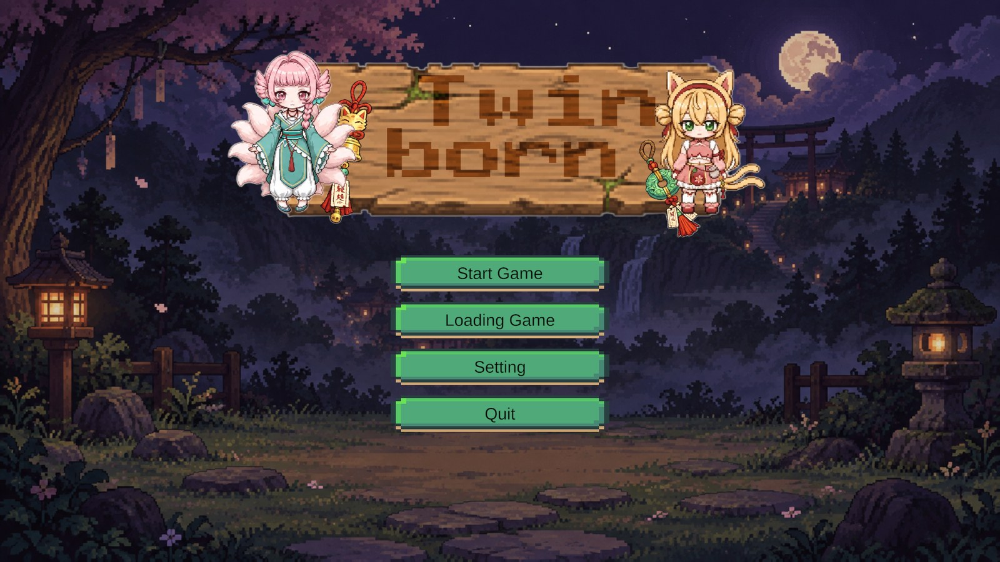
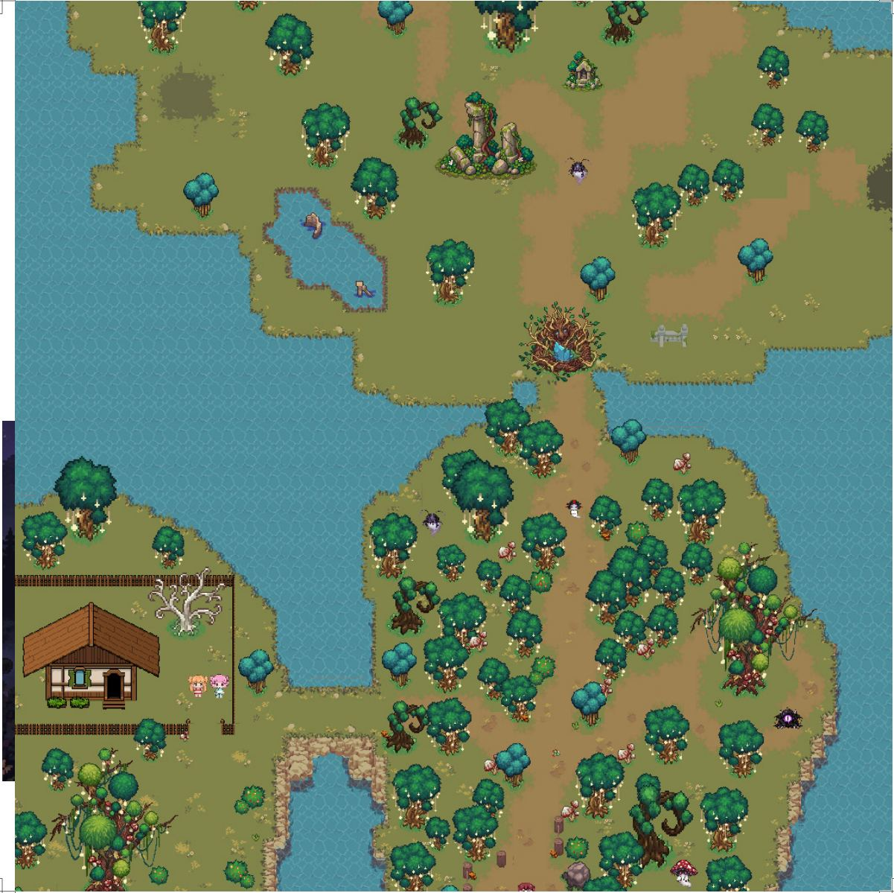
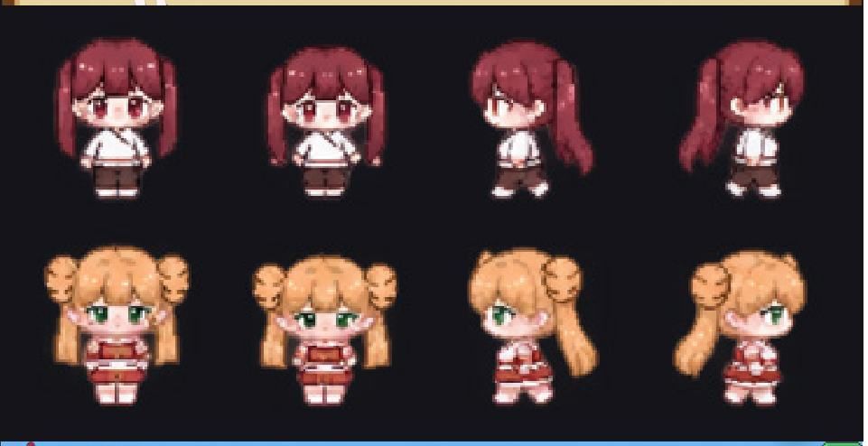
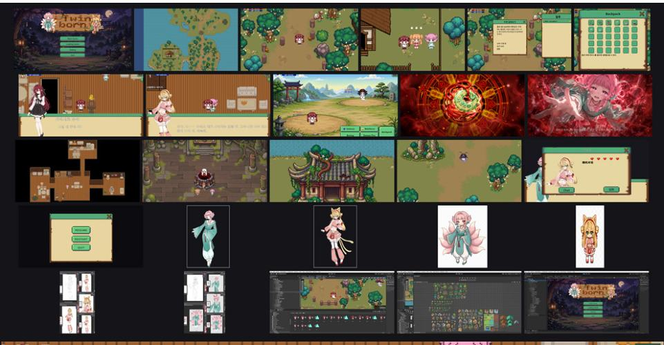
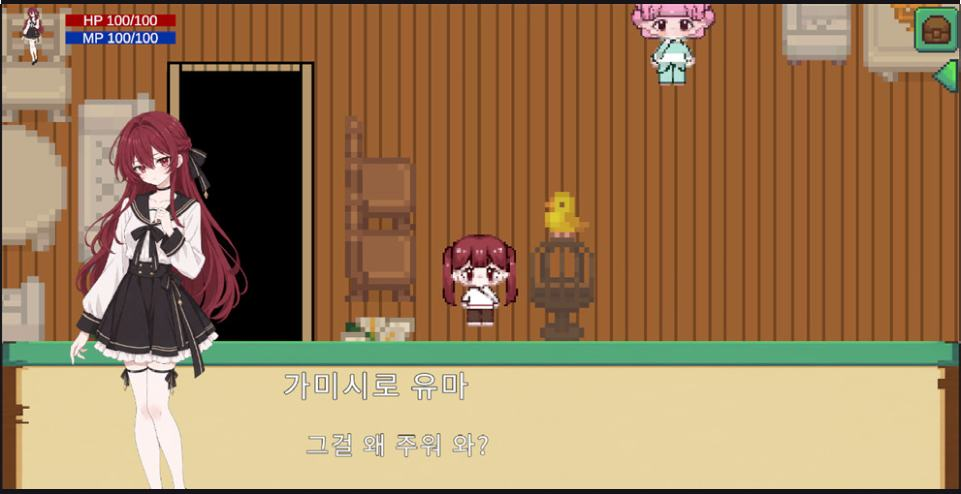
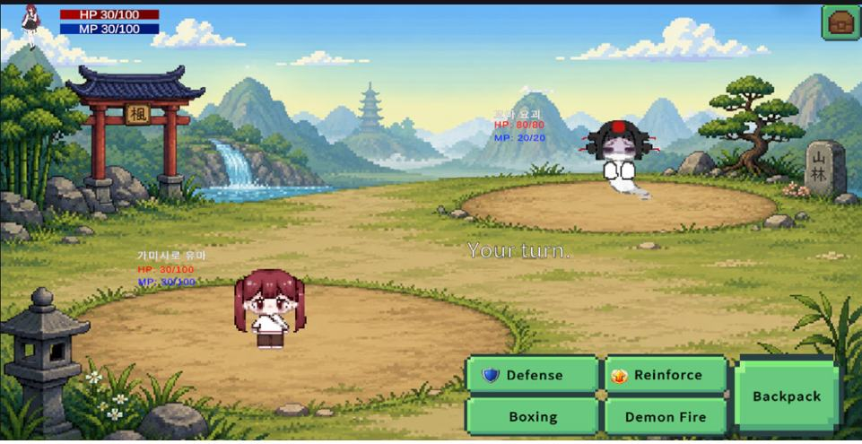
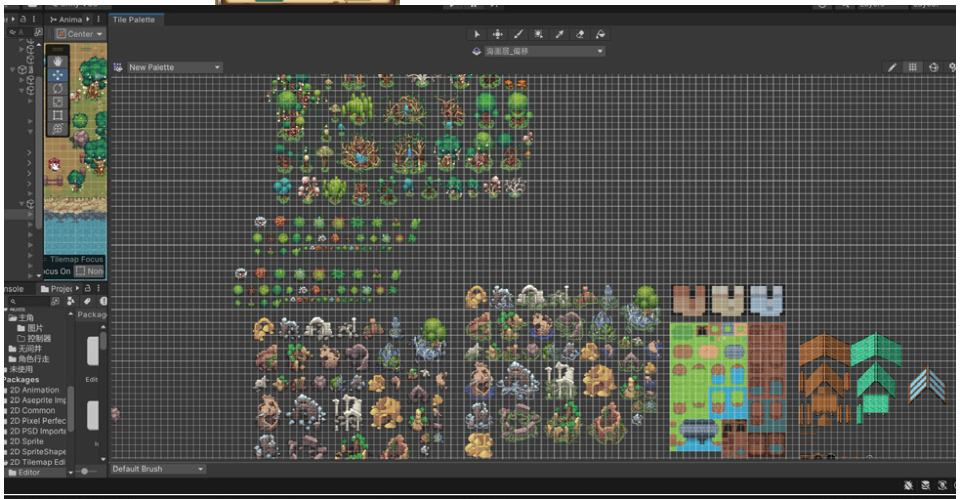

기억을 잃은 신대유진이 계곡에서 깨어나 쌍엽 자매의 도움을 받아 옥패에 얽힌 출생의 비밀을 찾아가며, 플레이어의 선택에 따라 여러 결말로 이어지는 이야기.
Shin Daeyujin, who has lost her memories, wakes up in a valley. With help from the Futaba sisters, she uncovers the birth secrets tied to a jade token. Player choices lead to multiple divergent endings.
- 학생
- 왕일각 (Wang Yige)
- 분야
- 게임
- 형식
- PC 싱글플레이 게임
- 엔진·도구
- Unity
- 장르
- 캐주얼
- 전시
- 2026 졸업작품전 「VOYAGE」
시놉시스
신대유진은 의식을 잃은 뒤 낯선 숲에서 깨어나고, 자신의 출생과 연관된 옥패만 기억한다. 쌍엽일향과 석월에게 구조된 뒤 계곡을 탐색하며 자신의 정체를 추적한다. 요기가 확산되고 음양사가 옥패를 쫓아 오자, 유진은 자매들과 함께 무간정으로 향해 감춰진 진실과 마주하게 된다. 플레이어의 탐색과 선택이 이야기의 결말에 영향을 미친다.
After losing consciousness, Shin Daeyujin awakens in an unknown forest, remembering only the jade token linked to her birth. Rescued by the Futaba sisters — Hinata and Tsukiyo — she explores the valley to trace her true identity. As yokai spread across the land and yin‑yang practitioners hunt for the jade token, Yujin travels with the sisters to the Boundless Shrine to confront long‑buried truths. Player exploration and choices shape the story’s final outcome.
기획 의도
쌍생은 스토리 탐험을 핵심으로 한다. 플레이어는 기억을 잃은 신대유진을 따라 낯선 계곡을 탐색하고 단서를 수집하며, 쌍엽 자매와 교류하며 옥패와 자신의 출생에 관한 비밀을 하나씩 밝혀나간다. 작품은 장면 탐색, 서브 퀘스트 상호작용, 중요한 선택지를 결합하여 플레이어가 행동을 통해 진실에 다가가 여러 결말을 맞이할 수 있도록 구성하였다.
“Ssangsaeng” centers on story‑led exploration. Players follow the amnesiac Shin Daeyujin as she explores an unfamiliar valley, gathers clues, and interacts with the Futaba sisters to piece together secrets of the jade token and her own origins. The work combines scene exploration, side‑quest interactions, and pivotal decision‑making, allowing players to approach the truth through their actions and experience different endings.
스틸





